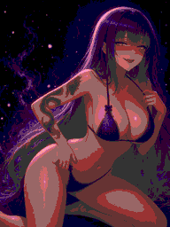
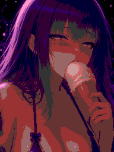
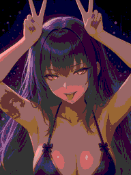

宗教非法人
ゆあ様
NOW LOADING0%
遊技の準備をしています
初回は素材の読み込みに少し時間がかかります。
デバッグモード · 通常プレイとは別のセーブを使用







まだ、終わらない。
演出体験
変われ……
 ST 残り0回 ＋ 保留
ST 残り0回 ＋ 保留獲得0玉
 10000発
10000発

右下のハンドルを長押し上へドラッグで強く、下へドラッグで弱く
← 左打ちへそを狙って抽選
右下ハンドルを長押し・上下ドラッグで強さ調整
まずは、玉を打ってみてください。
現在の演出・表示素材
楽曲制作：D’elf / d-elf.com


 ST 残り0回 ＋ 保留
ST 残り0回 ＋ 保留 10000発
10000発